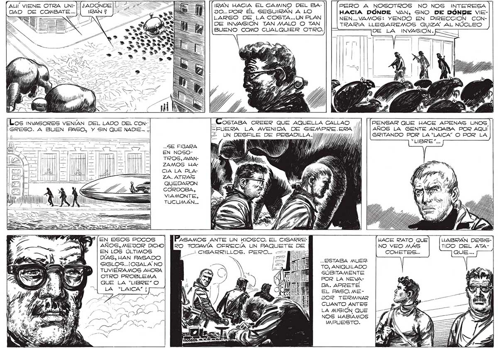

ALI VIENE OTRA UNL- | DAD DE COMBATE ...| SS T TA ¡RÁN HACIA EL CAMINO DEL BA430. POR ÉL SEGUIRAN A. LO LARGO DE LA COSTA... UN PLAN DE INVASION TAN MALO O TAN BUENO COMO CUALQUIER OTRO. PERO A NOSOTROS NO NOS INTERESA 263 HACIA DONDE VAN, SINO DE DÓNDE VIENEN... VAMOS: YENDO EN DIRECCION CONTRARIA LLEGAREMOG QUIZA” AL NÚCLEO DE LA INYASION.E ¡Los invasores VENÍAN DEL LADO DEL CON-SOGTABA CREER QUE AQUELLA CALLAO y/] [| (PENSAR QUE HACE APENAS UNOS, GRESO. A BUEN PASO, Y SIN QUE NADIE... =FUERA LA AVENIDA DE SIEMPRE.ERA /// AÑOS LA GENTE ANDABA POR AQUI > UN DESFILE DE PESADILLA.//// TT GRITANDO POR LA “LAICA” O POR LA (VEN : NT AA “LIBRE”... GE FIZARA pa Nal y Y, MY, SS PIN EN NOSO- e A Y, TROS, AVANZAMOS UA CIA LA PLAZA. ATRAS QUEDARON CORDOBA, VIAMONTE, TUCUMAN... EN ESOs pocos | Pasamos ANTE UN KIOSCO. EL CIGARRE-] HACE RATO QUE] [LABRÁN DESISAÑOS, MEJOR DICHO| PRO TODAVÍA OFRECIA UN PAQUETE DE NO VEO MÁS TIDO DEL ATACONETES. QUE ... EN LOS ÚLTIMOS DIAS, HAN PASADO : E + ..ESTABA MUER SIGLOS... ¡OJALA NO -- ¿5 JS TO, ANIQUILADO >. E > TUVIERAMOS AHORA ¿SE 4 mr UA GÚBITAMENTE OTRO PROBLEMA O p ES POR LA NEVAer a ¡o UN=4E le Ji (5 DA. APRETE A Da EL PASO.MESET" W pue! Y. AU A a JOR TERMINAR CUANTO ANTES LA MISIÓN QUE NOS HABIAMOS WMPUESTO. — CIGARRILLOS. PERO... e==>
